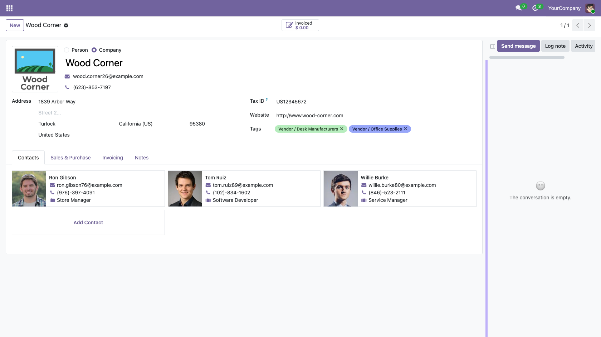
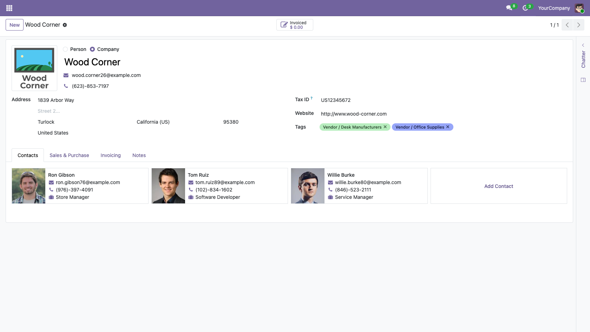
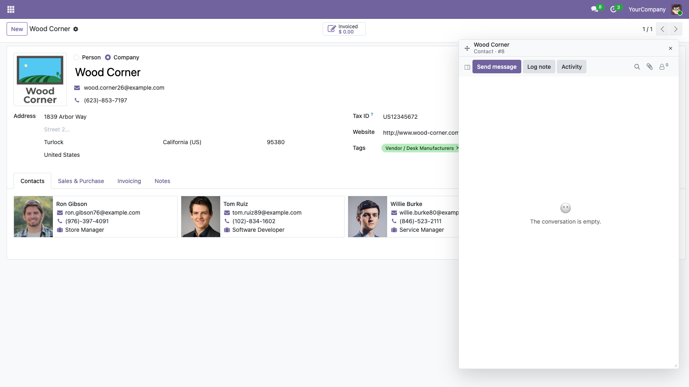
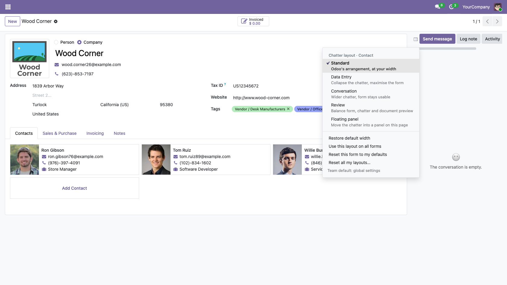
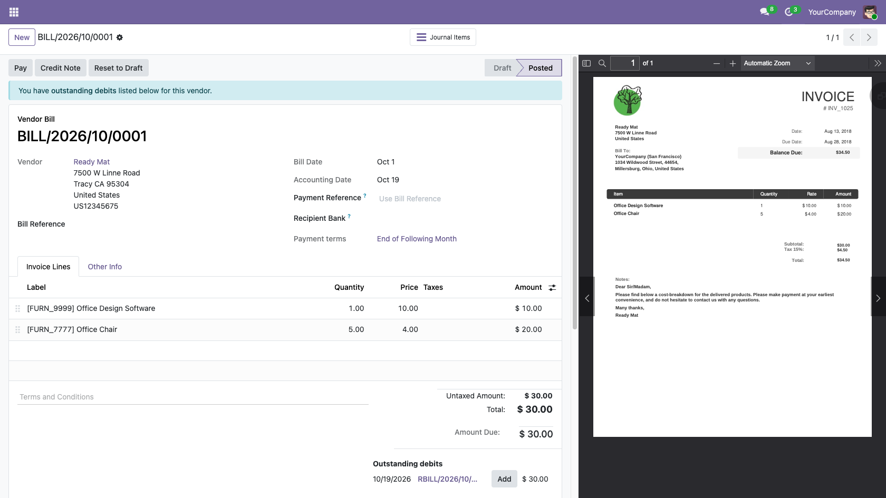
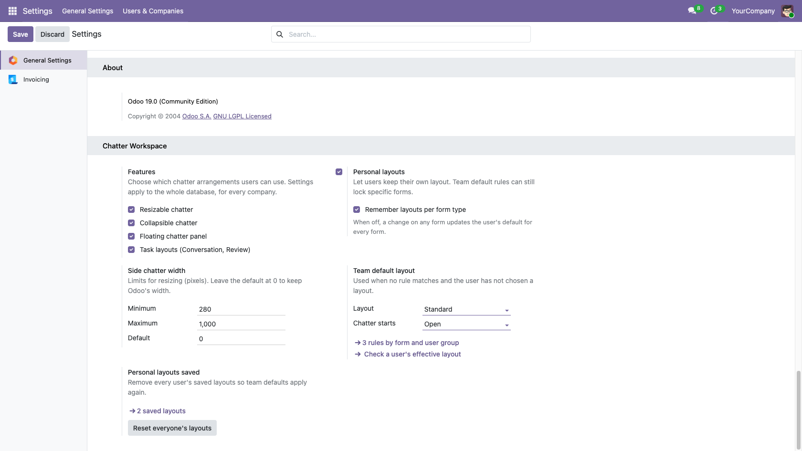
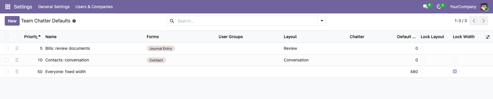

Chatter Workspace is an Odoo 19 and Odoo 20 module that lets each user resize the chatter, collapse (hide) it into a slim strip, or move it into a floating panel on any form view, and lets administrators set team default layouts. Layouts are saved per user on the server and follow the user to any browser.
Pick a task layout in one click: Data Entry (chatter collapsed, full-width form), Conversation (wide chatter), Review (form, chatter and Odoo's document preview side by side) or a Floating panel. Unsent messages, log notes and attachments are never lost when you switch.
| Odoo versions | 19.0 and 20.0 (one app per version) |
|---|---|
| Editions tested | Community and Enterprise, on Odoo 19.0 and 20.0 |
| Hosting | Odoo.sh and self-hosted (on-premise). Not available for Odoo Online (SaaS). |
| Depends on | Discuss (mail) only |
| Works on | Form views with a chatter, for example contacts, vendor bills and products, including custom models |
| Browsers tested | Chrome and Firefox on desktop, mouse or trackpad, keyboard |
| Setup | None required: install and use. Optional team settings for administrators. |
| Data stored | Each user's layout choices only. No message content, no drafts, no tracking, no external service. |
| License | LGPL-3 |
| Support | support@parameterllc.com (Parameter) |
Drag the thin handle on the chatter's left edge. It turns purple on hover. The form takes the freed space, including beyond Odoo's usual 1400 px form width, and always keeps at least 560 px so fields stay readable. Double-click the handle, or press Enter on it, to restore the default width. Keyboard users can resize with the arrow keys (Shift for bigger steps), Home and End. Administrators set the allowed range (default 280 to 1000 px).

A narrower chatter gives the form more room.
Choose Data Entry in the chatter's layout menu (the first icon in the chatter bar). The chatter collapses into a 40 px strip and the form uses the full width. One click on the strip brings the chatter back at its previous width and layout. Nothing is deleted or hidden from other users.

Data Entry: the chatter becomes a slim strip.
Yes. Floating panel moves the chatter into a panel inside the same browser tab that you can drag and resize, also with the keyboard. Its header always shows the record name and form type, and it follows you to the next record with the pager. It opens below the control panel so the pager and action buttons stay reachable, and it is kept inside the window when the window gets smaller. Closing it returns the chatter to the form.

The floating panel shows which record it belongs to.
Widths you drag while in Conversation or Review are remembered for that layout. Layouts only change how the screen is arranged: they never filter messages or change records.

One menu for every layout, inside the chatter bar.

Review on a vendor bill keeps Odoo's document preview.
No. Collapsing and floating rearrange Odoo's own chatter; they never close it. An unsent message or log note, and files you attached to it, are still there when you bring the chatter back. Drafts stay with the record they were written on, so a draft can never move to, or be sent from, another record.
Yes. Layouts are saved on the server for each user, per form type (for example one layout for invoices and another for contacts) or as the user's default for every form. They come back after a reload and on any other browser or computer. A smaller laptop screen shows a narrower chatter without overwriting the width saved on a large monitor. Saves are sent in order and the server ignores an older change that arrives late, so a slow connection never brings back an outdated layout. Users can reset one form, or all their layouts, from the same menu.
Yes. In Settings > General Settings > Chatter Workspace, administrators choose which features are available, the width limits, the default layout and whether users may keep personal layouts. Team default rules target specific forms and user groups with an explicit priority (lowest number first, then oldest), and can lock the layout or the width where needed. Check a user's effective layout shows, for any user and form, the resulting layout and which rule or setting it comes from. Settings apply to the whole database and every company.

Team settings: features, width limits, defaults.

Rules by form and user group, with priority and locks.
parameter_chatter_resize folder to your addons path (Odoo.sh: add it to your
repository branch).Built and supported by Parameter. Questions, bugs or configuration help: support@parameterllc.com.